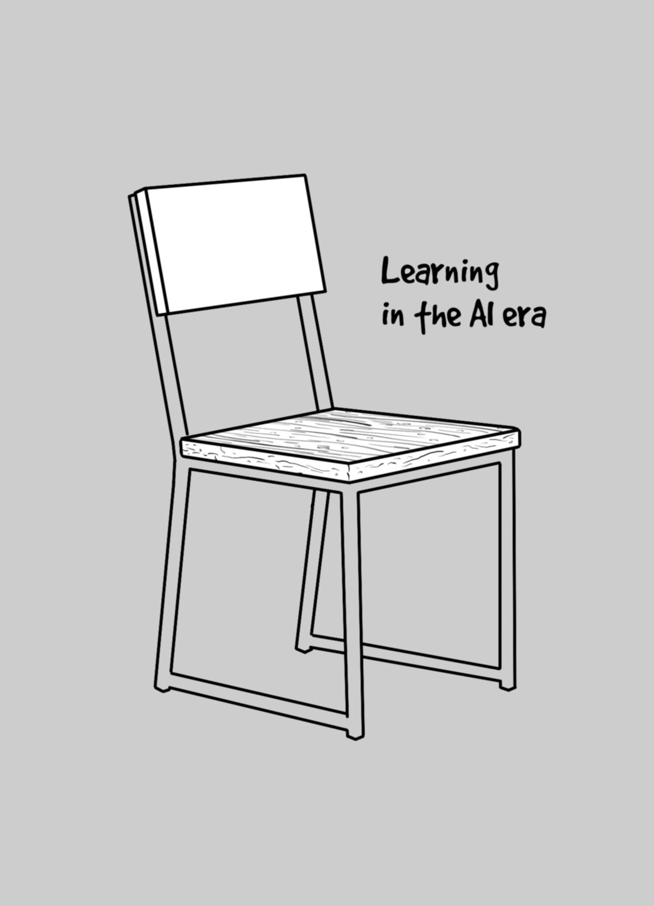

Digital ink, comics and code
Στο άμεσο μέλλον όπου απλά ρωτάς κάτι ένα chatbot και παίρνεις άμεσα την σωστή απάντηση αλλά και την επεξήγηση της απάντησης η διαδικασίας της μάθησης αποκτά διαφορετικό περιεχόμενο. Η διαδικασία της μάθησης τροφοδοτούμενη από την Τεχνητή Νοημοσύνη (Τ.Ν.) θα έχει πλέον να κάνει κυρίως με την ικανότητα του να κάνεις τις σωστές ερωτήσεις περιγράφοντας το θέμα από όλες τις πλευρές και σε όλες του τις διαστάσεις. Με τον τρόπο αυτό, λαμβάνεις τις σωστές απαντήσεις και κατασκευάζεις το προσωπικό σου εκπαιδευτικό υλικό ανακαλύπτοντας το βήμα προς βήμα.
Αλλά το πως μπορεί να μετατραπεί το εκπαιδευτικό υλικό σε γνώση είναι άλλο θέμα. Σύμφωνα με την επικρατούσα θεωρία για να μετατραπεί ένα εκπαιδευτικό υλικό σε γνώση θα πρέπει οι εκπαιδευόμενοι :
Ας δούμε τι μπορεί να κάνει η Τ.Ν. σε κάθε ένα από τα παραπάνω :
Κατανόηση
Η κατανόηση οποιουδήποτε θέματος έχει να κάνει με τις ερωτήσεις. Όσο περισσότερες ερωτήσεις κάνει ο εκπαιδευόμενος τόσο καλύτερα θα κατανοήσει το θέμα που μελετά και θα λύσει την όποια απορία.
Επανάληψη
Η επανάληψη του περιεχομένου με διαφορετικά λόγια είναι ένα βασικό χαρακτηριστικό της Τ.Ν.
Χρήση
Η κατασκευή ασκήσεων με βάση το περιεχόμενο είναι ακόμα ένα βασικό χαρακτηριστικό της Τ.Ν.
Σύνδεση με υφιστάμενη γνώση
Η σύνδεση με την υφιστάμενη γνώση είναι ίσως και το πιο ενδιαφέρον κομμάτι καθώς μπορεί να γίνει με πολλούς και διαφορετικούς τρόπους με την χρήση της Τ.Ν. συνδέοντας πρακτικά οτιδήποτε με οτιδήποτε.
Δημιουργείται επομένως ένας ανεξερεύνητος τόπος ανακαλύψεων και σύνθεσης που δίνει την δυνατότητα στο εκπαιδευόμενο να έχει περισσότερο ενεργητικό ρόλο κάτι που θα κάνει την όλη διαδικασια περισσότερο εξατομικευμένη, ενδιαφέρουσα και αποδοτική.
Και εδώ πάμε σε ένα ακόμα ενδιαφέρον θέμα : Πώς μπορεί να είναι ένα σημειωματάριο αναστοχασμού στην εποχή της Τ.Ν. Αλλά αυτό είναι μάλλον ένα ζήτημα για επόμενο reflect note.